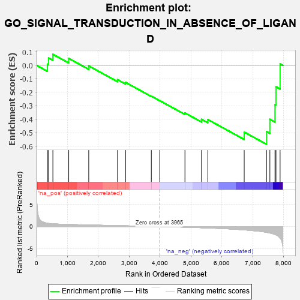
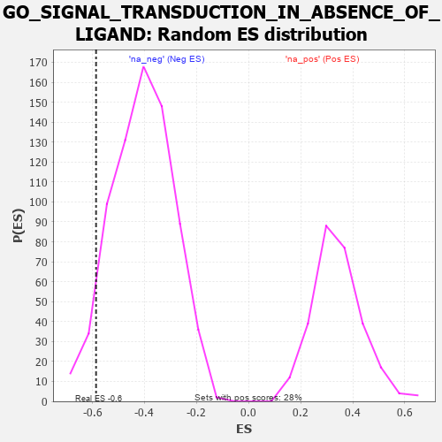

| | | Dataset | 7d |
| Phenotype | NoPhenotypeAvailable |
| Upregulated in class | na_neg |
| GeneSet | GO_SIGNAL_TRANSDUCTION_IN_ABSENCE_OF_LIGAND |
| Enrichment Score (ES) | -0.5860472 |
| Normalized Enrichment Score (NES) | -1.4377513 |
| Nominal p-value | 0.061026353 |
| FDR q-value | 0.26139423 |
| FWER p-Value | 1.0 |
Table: GSEA Results Summary

Fig 1: Enrichment plot: GO_SIGNAL_TRANSDUCTION_IN_ABSENCE_OF_LIGAND
Profile of the Running ES Score & Positions of GeneSet Members on the Rank Ordered List
| PROBE | GENE SYMBOL | GENE_TITLE | RANK IN GENE LIST | RANK METRIC SCORE | RUNNING ES | CORE ENRICHMENT | | 1 | GSK3A | | | 351 | 0.745 | 0.0090 | No |
| 2 | BAX | | | 387 | 0.711 | 0.0554 | No |
| 3 | HTRA2 | | | 527 | 0.621 | 0.0822 | No |
| 4 | AKT1 | | | 1040 | 0.476 | 0.0518 | No |
| 5 | WWOX | | | 1688 | 0.359 | -0.0039 | No |
| 6 | BAG3 | | | 2620 | 0.209 | -0.1060 | No |
| 7 | DAPK3 | | | 2880 | 0.169 | -0.1265 | No |
| 8 | NF1 | | | 3713 | 0.040 | -0.2283 | No |
| 9 | EYA1 | | | 3987 | -0.006 | -0.2622 | No |
| 10 | TERT | | | 4801 | -0.157 | -0.3532 | No |
| 11 | SGK3 | | | 5338 | -0.282 | -0.4004 | No |
| 12 | FGFR1 | | | 5543 | -0.332 | -0.4024 | No |
| 13 | GSK3B | | | 6719 | -0.768 | -0.4953 | Yes |
| 14 | CASP2 | | | 7442 | -1.322 | -0.4916 | Yes |
| 15 | DCC | | | 7550 | -1.470 | -0.4001 | Yes |
| 16 | BOK | | | 7715 | -1.817 | -0.2911 | Yes |
| 17 | CASP3 | | | 7747 | -1.902 | -0.1592 | Yes |
| 18 | FYN | | | 7881 | -2.622 | 0.0113 | Yes |
Table: GSEA details [plain text format]

Fig 2: GO_SIGNAL_TRANSDUCTION_IN_ABSENCE_OF_LIGAND: Random ES distribution
Gene set null distribution of ES for GO_SIGNAL_TRANSDUCTION_IN_ABSENCE_OF_LIGAND